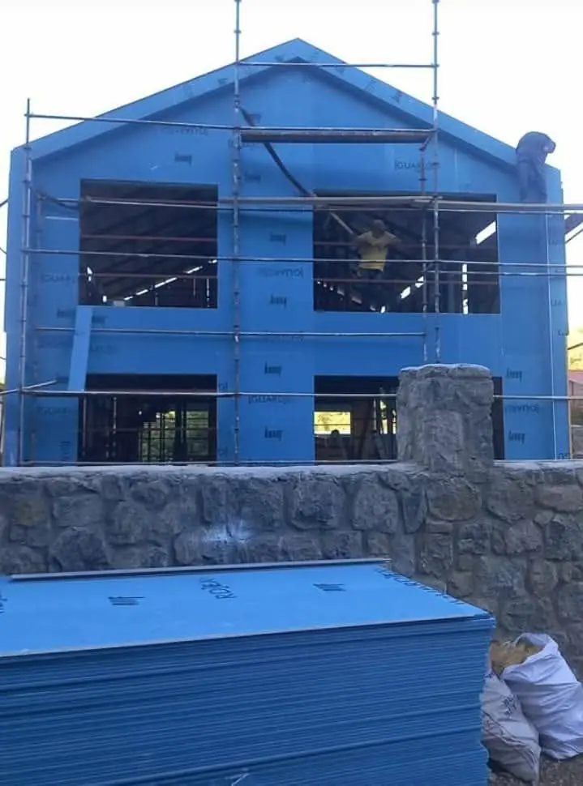
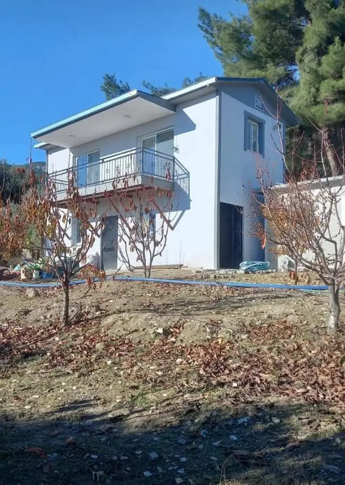
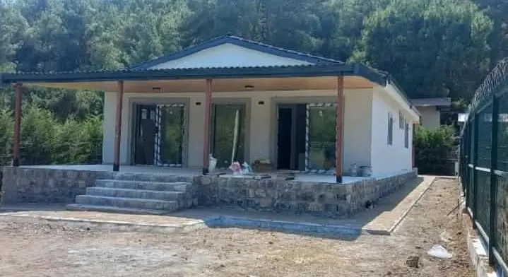
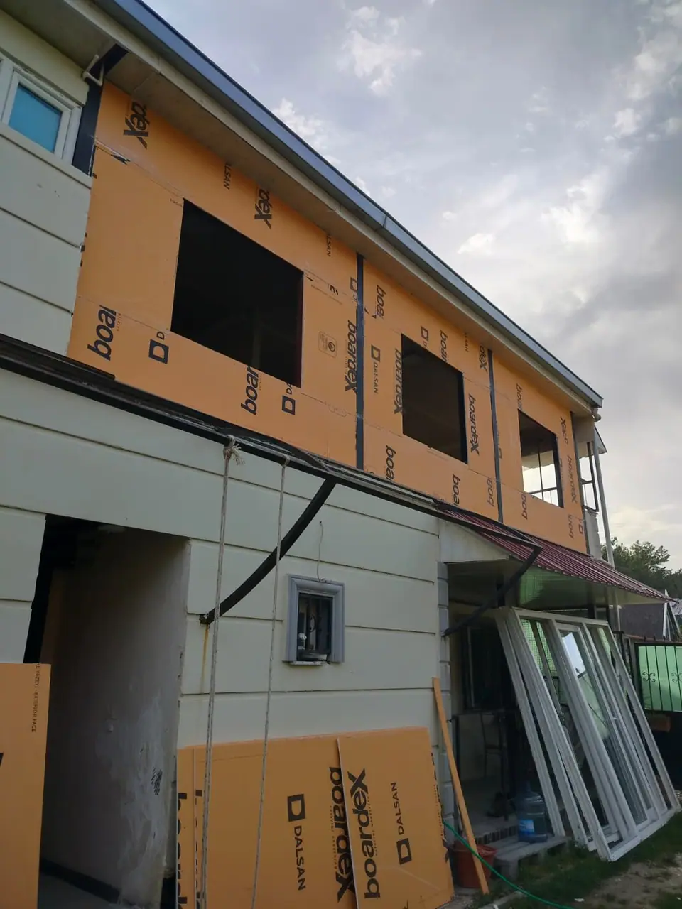

Çelik Yapı nedir?
Çelik yapı, taşıyıcı iskeleti çelik profillerden oluşan; dış cephe, yalıtım ve iç kaplamaları bu iskelet üzerine uygulanan binalardır. Tek veya iki katlı müstakil evler, bungalovlar, bahçe evleri, ofis ve depo yapıları bu yöntemle inşa edilebilir.
Çelik yapıların planlanmasında taşıyıcı sistem kadar yalıtım, nem bariyeri ve cephe detayları da önemlidir. Ruhsat, imar durumu ve tarım arazisi kısıtları gibi yasal konuların yapıya başlamadan önce ilgili belediyeden teyit edilmesi gerekir.

Hizmet detayları
- Tek ve iki katlı çelik ev iskeleti
- A tipi ve bungalov tipi yapılar
- Çelik çatı ve sac/panel kaplama
- Dış cephe levha, yalıtım ve kaplama altyapısı
- Veranda, teras ve merdiven gibi ek elemanlar
Uygulama alanları
- Müstakil konut ve bahçe evleri
- Yazlık ve hobi bahçesi yapıları
- Bungalov ve konaklama birimleri
- Şantiye ve saha ofisleri
- Depo ve ek binalar
Kullanım senaryoları
Geniş bahçeli arsalarda tek katlı verandalı çelik evler ve iki katlı müstakil yapılar, sade planları ve kısa saha süresiyle öne çıkar.
Sahil bölgelerindeki yazlık arsalarda çelik yapı tercih edildiğinde, tuzlu havaya karşı taşıyıcı profillerin korozyon koruması ve cephe detaylarındaki su yalıtımı özellikle dikkat edilmesi gereken konulardır.
Tarım arazilerinde bekçi kulübesi, depo veya ürün işleme yapıları gibi ihtiyaçlar için çelik yapı değerlendirilebilir; tarım arazisindeki yapılaşma koşullarının önceden belediyeden teyit edilmesi gerekir.
Bungalov ve küçük ölçekli konaklama birimlerinde çelik yapı, birbirinin tekrarı olan birimlerin düzenli ve hızlı üretilmesine imkân verir.
Malzeme ve üretim süreci
- Kutu profil ve hafif çelik taşıyıcılar
- Çimento esaslı levha, OSB veya sandviç panel cephe seçenekleri
- Isı ve su yalıtımı, buhar dengeleyici katmanlar
- Trapez sac, sandviç panel veya kiremit görünümlü çatı kaplamaları
Avantajları
- Betonarmeye göre daha kısa yapım süreci
- Hafif taşıyıcı sistem
- Plan ve cephede esneklik
- Atölyede hazırlanan parçalarla düzenli saha çalışması
İlgili çalışmalar







Sık sorulan sorular
Çelik ev için ruhsat gerekir mi?
Kalıcı yapılar için imar mevzuatına göre ruhsat gerekir. Arsanızın imar durumunu ve tarım arazisi ise yapılaşma koşullarını başlamadan önce ilgili belediyeden öğrenmeniz önerilir.
Çelik yapılar sıcak veya soğuk olur mu?
Konfor, yapının malzemesinden çok yalıtım detaylarına bağlıdır. Duvar, çatı ve döşemede uygun kalınlıkta yalıtım ve ısı köprülerini kesen detaylar uygulandığında konforlu bir yaşam alanı elde edilir.
Anahtar teslim yapıyor musunuz?
İşin kapsamı her projede ayrıca konuşulur. Taşıyıcı iskelet, çatı ve kaplama gibi hangi aşamaların teklife dahil olduğu, keşif sonrasında yazılı olarak netleştirilir.
İlçelere göre çelik yapı
Bölgenize özel uygulama senaryoları ve sık sorulan sorular için ilçenizi seçin: